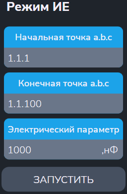

Утилита "Режим ИЕ"
Утилита измеряет ёмкость конденсатора.
- "Начальная точка a.b.c" и "Конечная точка a.b.c" - входы АСК для подключения эталонной емкости;
- "Электрический параметр" - задание нужной эталонной ёмкости (в нФ).

После ввода параметров меню автоматически выполняются следующие действия:
- Начальная заданная точка подключается к шине A1;
- Конечная заданная точка подключается к шине B1;
- Производится измерение;
-
В протокол выводится сообщения вида:
$TST1 Cд.б=1мкФ+-5.00% Cизм=1.0000мкФ Погр=+0.00%
$TST1 Измерений:1 Все норма ПОГРmin=0 ПОГРmax=+0.00%